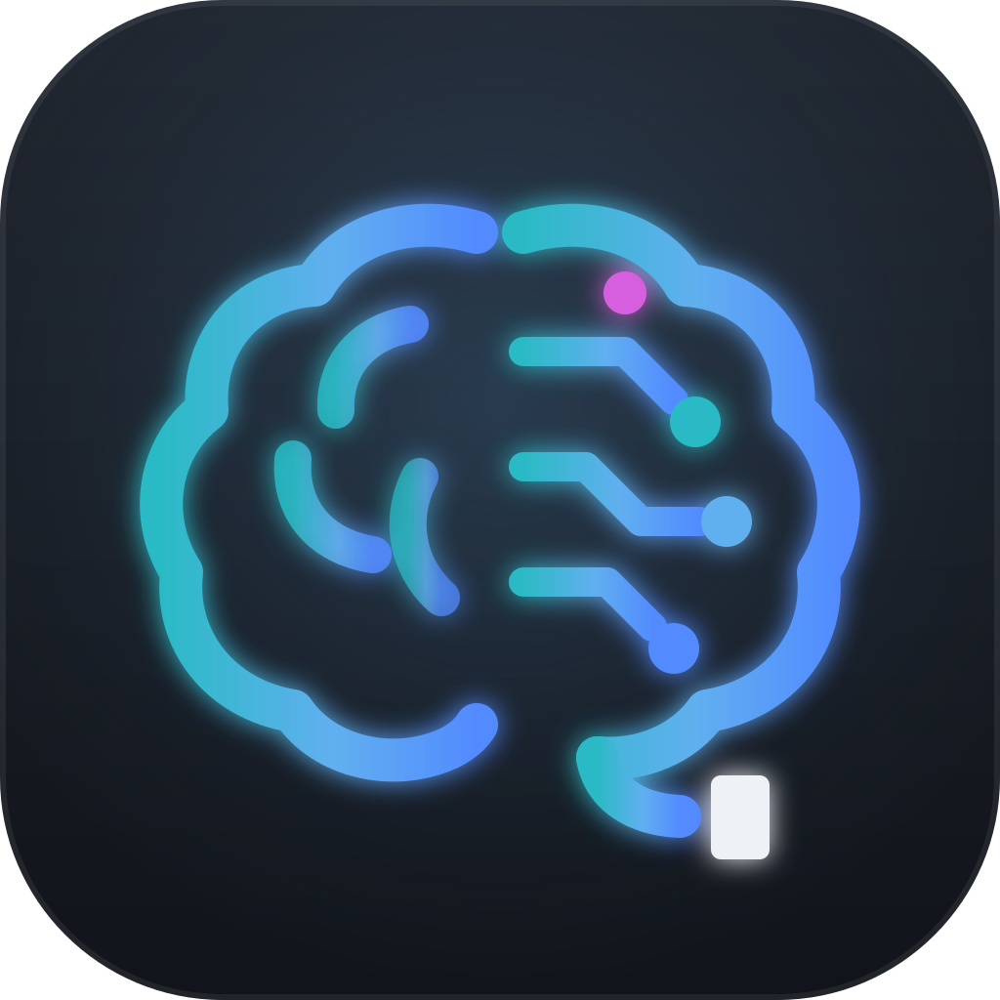
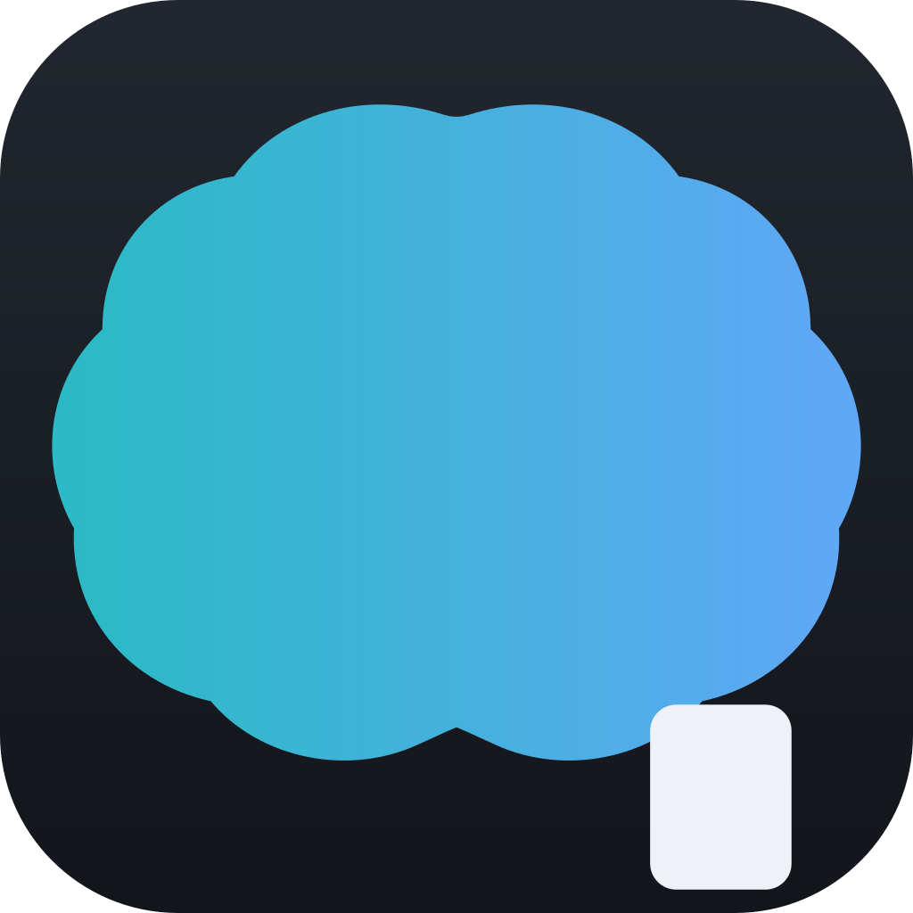

Lijeva hemisfera je organska — vijuge, čovjek koji misli. Desna je circuit-stablo — tri grane sa čvorovima: agenti koje orkestriraš. Donja kontura ne završava — izlazi u terminalsku liniju sa blok-kursorom: mozak koji svoje misli kuca u terminal. Jedna magenta sinapsa je attention — trenutak kad te agent pozove.